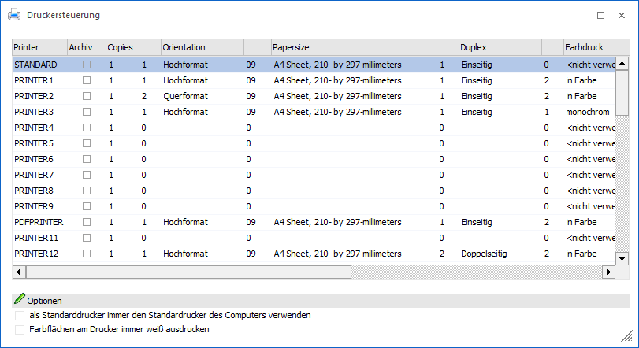
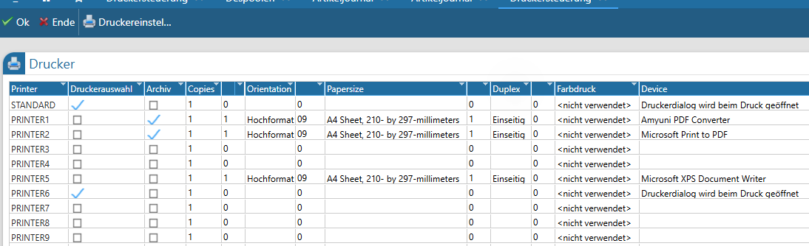
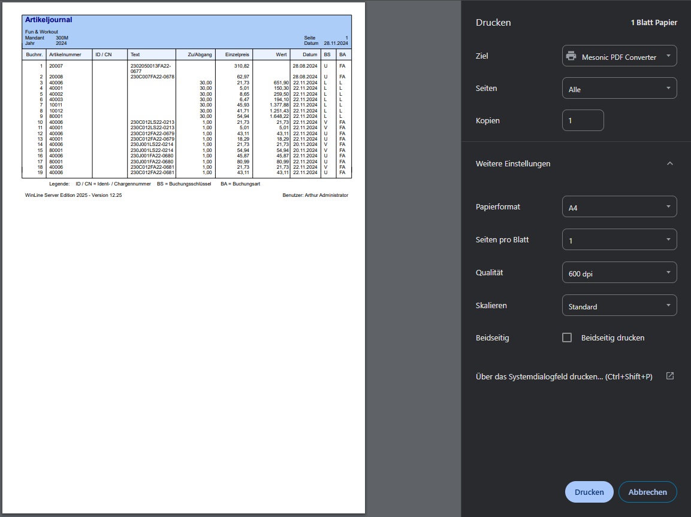
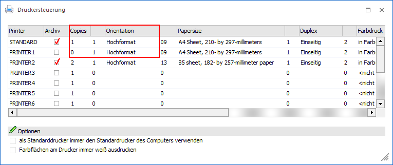
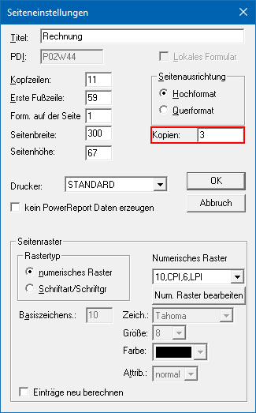
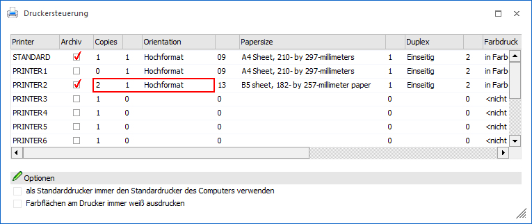
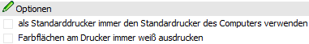
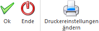
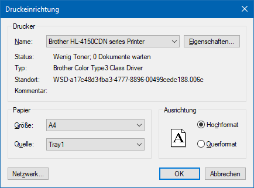

In der WinLine gibt es die Möglichkeit, bis zu 50 Drucker zu verwalten, wobei ein Drucker mit verschiedenen Einstellungen beliebig oft verwendet werden kann. Der Drucker "PDFPRINTER" (an zehnter Position der Tabelle) ist fix vorgegeben und kann Ausgaben im PDF-Format erzeugen.
Die Druckersteuerung kann aus jeder WinLine Applikation heraus unter dem Menüpunkt
1 Datei
1 Drucker
aufgerufen werden.
Hinweis 1
Neue Drucker können per Doppelklick oder mit Hilfe des Buttons "Druckereinstellungen ändern" angelegt werden (jeweils bei einer freien Druckerzeile), wobei automatisch auf die Druckersteuerung von Windows zugegriffen wird.
Hinweis 2
Alternativ kann für den "PDFPRINTER" ein anderer PDF-Drucker hinterlegt werden (z. B. der Microsoft PDF Drucker). Der PDF-Export wird ab diesem Zeitpunkt dann von diesem Druckertreiber durchgeführt.
Dabei gilt es zu beachten, dass keine externen PDF-Drucker kompatibel sind, welche PostScript-Code erzeugen: Während der Konvertierung würden daraus zwar Dokumente erzeugt werden, welche die korrekte Dateiendung tragen, welche dann aber dennoch nicht dem korrekten Format entsprächen und somit kein fertiges PDF-Dokument wären.
Weiterhin sind im Vergleich zum mesonic PDF-Konverter über alternative PDF-Drucker erzeugte Dokumente ggf. größer und es sind bei der weiteren Verwendung keine eingeschränkten Berechtigungen, oder die Nutzung von Passwörtern, Signaturen/Zertifikaten möglich.
Achtung
Alle folgenden Einstellungen sind arbeitsplatzbezogen und werden im WinLine-Verzeichnis des PCs in der Datei "MESOPRINT.INI" bzw. "MESONIC.INI" gespeichert.
Druckersteuerung in der WinLine

Druckersteuerung in der MWL

In der Tabelle werden die 50 WinLine Drucker (inklusive PDF-Drucker) des Arbeitsplatzes aufgelistet. Der Standard-Drucker (1. Zeile) wird für "normale" Ausdrucke verwendet, die PRINTER1 bis PRINTER9 bzw. PRINTER11 bis PRINTER50 können für Druckumleitungen verwendet werden (Druckumleitungen können in den WinLine Formularen hinterlegt werden). Folgende Informationen können dabei pro Drucker hinterlegt werden:
Ø Druckerauswahl
Diese Spalte bzw. Checkbox steht nur in der MWL zur Verfügung.
Wird die Checkbox aktiviert, so öffnet sich beim Befehl "Seite ausdrucken" (über Rechtsklick - Kontextmenü/Ausgabe) der Druckerdialog.
Bleibt die Checkbox deaktiviert, so werden jene Drucker angesprochen, die am WinLine-Server installiert sind.
Im Druckerdialogfenster kann dann jeder installierte Drucker ausgewählt, sowie weitere Einstellungen vorgenommen werden.

Hinweis
Voraussetzung für das Öffnen des Druckerdialogs ist, dass die "Ausgabe Drucker/Spooler" im Menü auf "Drucker" gesetzt wurde.
Es ist auch möglich den Druckerdialog bei Betätigen des Buttons "Ausgabe Drucker" zu öffnen, dafür muss in den Parameter/Einstellungen/WinLine Server die Checkbox "Netzwerkdrucker verwenden" aktiviert sein.
Ø Archiv
Wird diese Option aktiviert, dann werden alle Ausdrucke, die auf diesen Drucker ausgegeben werden, automatisch archiviert.
Hinweis
Alle weiteren Einstellungen (z.B. welche Felder werden Beschlagwortet, wann wird analysiert, etc.) erfolgen im WinLine ADMIN (Menübereich "Archiv").
Ø Copies
Hier kann die Anzahl der Kopien eingestellt werden, die bei jedem Druckvorgang ausgedruckt werden soll. Es wird jedoch hier der erste Ausdruck (Original) mitgezählt, d.h. soll zum ersten Ausdruck noch eine Kopie erfolgen, muss hier 2 eingestellt werden, usw.
Achtung
Beträgt die Anzahl der Kopien 0 oder 1 (und ist als Orientation Hochformat eingestellt) wird die Anzahl der Kopien lt. Einstellungen im Formular verwendet. Ist die Angabe >1 wird die Einstellung lt. Druckersteuerung verwendet.
Beispiel 1
Copies: 1 (oder 0)
Orientation: 1

Es wird die Einstellung lt. Formular verwendet, d.h. es werden (in diesem Beispiel) 3 Drucke des WinLine Belegs gedruckt.

Beispiel 2
Copies: 2 (oder größer)
Orientation: Hoch- oder Querformat

Es werden (in diesem Beispiel) 2 Drucke des WinLine Belegs gedruckt.
Ø Orientation
Aus der Auswahlliste kann ausgewählt werden, in welcher Ausrichtung der Ausdruck erfolgen soll. Dabei gibt es die Möglichkeiten, zwischen Portrait (Hochformat) und Landscape (Querformat) zu entscheiden. Die Ausrichtung wird nach Bestätigung in das nächste Informationsfeld übernommen.
Ø Papersize
Aus der Auswahllistbox kann die Papiergröße ausgewählt werden, mit der der Ausdruck durchgeführt werden soll. Dabei stehen alle Papiergrößen zur Verfügung, die auch in der Windows-Druckersteuerung definiert wurden. In das nächste Informationsfeld wird die Bezeichnung der Papiergröße übernommen.
Ø Duplex
Aus der Auswahlliste kann ausgewählt werden, ob der Ausdruck einseitig oder doppelseitig erfolgen soll. Beim doppelseitigen Ausdruck kann noch zwischen der horizontalen (kurze Seite) und der vertikalen (langen Seite) gewählt werden. Dazu gibt es folgende Einstellungen:
ü Simplex
Einseitiger Druck
ü Duplex Vertikal
Doppelseitiger
Druck mit langer Seite - die Vorder- und die Rückseite werden spiegelverkehrt
gedruckt.
ü Duplex
Horizontal
Doppelseitiger Druck mit kurzer Seite - die Vorder- und die
Rückseite werden nur seitenverkehrt gedruckt.
Achtung
Diese Einstellungen sollten nur bei solchen Druckern vorgenommen werden, die auch doppelseitig drucken können.
Ø Device / Driver / Port
Die restlichen Einstellungen wie Device (wo ist der Drucker angeschlossen), Driver (welcher Druckertreiber wird verwendet) und Port (an welchem Anschluss hängt der Drucker) können durch Anklicken des Ändern-Buttons verändert werden. Dabei können die Einstellungen des Druckers verändert werden, der gerade bearbeitet wurde (der gerade aktiv ist). Dadurch wird die Druckereinstellung von Windows geöffnet, wo ebenfalls alle zuvor beschriebenen Einstellungen durchgeführt werden.
Optionen

Ø als Standarddrucker immer den Standarddrucker des Computers verwenden
Mit dieser Option kann gesteuert werden, dass immer auf den Standarddrucker des Computers zugegriffen werden soll. Diese Option macht dann Sinn, wenn z.B. die Druckerzuordnung via Terminalserver mit jeder Anmeldung neu vergeben wird.
Achtung
Durch diese Einstellung wird der eingetragene Standarddrucker ignoriert und stattdessen immer der Standarddrucker des Systems verwendet. Zusätzliche Einstellungen die in der Tabelle gewählt werden können (wie z.B. Hoch- oder Querformat) werden trotzdem auf den Drucker angewendet. Die anderen Drucker beeinflusst diese Einstellung nicht.
Ø Farbflächen am Drucker immer weiß ausdrucken
Wenn diese Option aktiviert ist, dann werden Bereiche, die in der Bildschirmansicht als färbige Flächen (z.B. Kopfbereich bei den Standardformularen) angezeigt werden, am Drucker weiß ausgedruckt.
Buttons

Ø Ok
Durch Anwahl es Buttons "Ok" bzw. der Taste F5 werden die Einstellungen gespeichert und das Fenster geschlossen
Hinweis
Alle folgenden Einstellungen sind arbeitsplatzbezogen und werden im WinLine-Verzeichnis des PCs in der Datei "MESOPRINT.INI" bzw. "MESONIC.INI" gespeichert.
Ø Ende
Bei Anwahl des Buttons "Ende" bzw. der Taste ESC wird das Fenster geschlossen und alle nicht gespeicherten Eingaben verworfen.
Ø Druckereinstellungen ändern
Mit Hilfe des Buttons "Druckereinstellungen ändern" können neue Drucker hinzugefügt (Fokus auf einer freien Druckerzeile) oder bearbeitet werden (Fokus auf bestehender Druckerzeile). Hierbei wird immer auf die Druckersteuerung von Windows zugegriffen.
